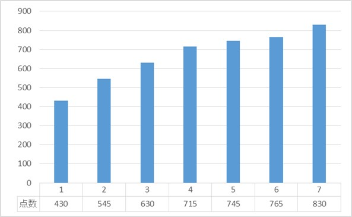

私は現在（2019/09/21）までにTOEICを
その点数の偏移を下の図に示す。
点数の推移を見て、私の記録を目標に勉強してみてほしいと思う。

海外インターンシップ-台湾へ-
私は海外にインターンシップで２か月半、台湾に行っていたのだがそれが丁度、715点を取った直後である。そして、帰国後に受けたTOEICでは745点とさほど点数が上がっていないことが分かる。
海外に行けばおのずとTOEICの点数が上がると漠然としたイメージを持っている人も多いと思うが、それは違う。
日常生活で使う英語とTOEICで使うビジネス英語はかなり違う。
そのまま点数に直結しないと私の経験から言うことができる。
TOEICの点数があまり上がらなかった原因として、台湾という土地の問題もあるだろう。
台湾の主要言語は中国語であり、英語ではない。
やはりTOEICで使用されているリスニング音声の英語とは発音が違う。
やはり、英語を本気で学ぶなら本場に行くべきだろう。
勉強時間と点数上昇幅の関係と考察
TOEICを勉強する上でカギとなるのは、やはり楽して点数を取りたいと皆一度は思うことだろう。
しかし、そんな方法など存在しない。
本屋に行くと1週間で○○点と題した本が並んでいることがあるが、
そんな短時間で取れるなら、その本以外のTOEIC関連本は店頭から姿を消すだろう。
TOEICの点数と勉強時間の関係を表すこんなデータがある。
このデータはTOEICの公式が出しているものなので、信頼できるデータである。
おおよそ100点あげるために
私は運よく、受験するたびに点数が上昇している。